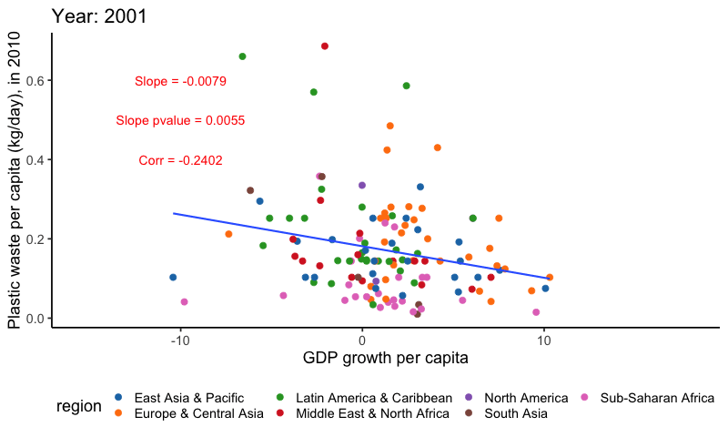

Kevin’s TidyTuesdays in 2019
Introduction
This webpage was originally designed to host all of my work for the tidytuesday challenge.
However, as a data scientist, I often need a quick workspace to host all my other statistical analytics. Hence, as my analytical interests are not limited to just tidytuesday datasets, I also use this repo to host a whole range RMarkdown HTML reports.
This webpage was deployed through GitHub Actions and GitHub Pages.
2020 Jan 03 - bushfire
This is not a fun exercise. I live in Australia and Australia is now hit with unprecedented number of bushfires. My house is about 30 mins drive from the nearest bushfire this week. I grabbed the NASA - FIRMS data and made a visualisation of the spread of bushfire around my house in the past 30 days.
See here for the RMarkdown generated HTML document.

2019 Dec 07 - Side-by-side plots
This is a very small (blog)
post about making side-by-side plots, in celebration of
patchwork being uploaded onto CRAN. A more complex example
using clustering can be found here.
2019 Nov 28 - UAC ATAR scaling
This is my own personal project. The idea is to scrape the HSC scaling data from UAC published PDF. See the script for download here, analysis will be made available later. Some intermediate work are here
2019 Nov 04 - Cricket
This is my own personal project. A small website is here.
If you are interested in all the analytics that I have done in cricket analytics, see Cricinformatics.
I will merge this analysis with Cricinformatics soon.
2019 Aug 13 - Roman Emperors
RMarkdown generated HTML document is here.
Summary of findings:
- This analysis is incomplete and should be resumed at a future date.
- Being an emperor is a highly risky job. You are more likely to die from assassination than any other causes.
- A good advice on having a long reign is to make your rise to power be somewhat peaceful. That means you better be someone who can inherit the empire through birthright.

The previous analysis gave me an idea to set up a framework to do a survival analysis of the time which emperors reign.
- Consider only the emperors that died during their reign with known causes.
- The time which an emperor reigns is the observed survival time.
- If an emperor dies of natural causes, then I will interpret that to mean this emperor has truly reached the end of his life. So in the language of survival analysis, I will label this emperor as truly “dead”.
- If an emperor dies of other causes, then I will interpret that to mean this emperor has his life cut-short. So in the language of survival analysis, I will label this emperor as “censored”.
- Of course, this analysis is problematic because each observation is not independent. I mean, these emperors love killing each other! But this is a very simple attempt to incorporate the problem of unnatural death into an analysis of the reign of emperors based on their original rise to power.

Below: timeline plot combining cause of death and rise of power.
- Around 150 AD, there is a series of emperors that are rose to powerful peacefully and also died of natural causes. Interestingly, towards the end of the available data, there is also a group of emperors that rose to power peacefully but had a mixture of causes of death.
- Around 250 AD, there is a series of emperors that rose to power by also killed.
Both of these time-dependent trends were not shown in the “survival analysis” above. This is why I criticise the survival analysis above since these time effects are taken into account for the reigning time of the emperors. Namly, during turbulent periods of the history, emperors are more likely to die regardless of their rise to power.

2019 Jul 23 - Birds impact
Report can be found here.
Summary of findings:
- This analysis is incomplete and should be resumed at a future date. I find this data to be much messier than previous weeks, and this gets me excited. Messy data is like a puzzle and I like puzzles.
- This is a data on number of bird impact incidents with airplanes in the US between 1990 and 2018. Unfortunately, due to limited supplementary data available, the analysis I can do at this stage is limited.
- As expected, we find that the birds impact incidents are seasonal with less incidents during the winter months. However, we cannot conclude whether this is due to inactivities of birds during these months or due to reduced number of flights.

- Another interesting trend is that there is a dip in the number of incidents around June every year. And this dip was only visible for flights around night times. This could be due to the scheduling of the flights around this time of the year.

Key things that I learnt:
- I am getting a bit better at using the
gganimatepackage. This time, it integrated very smoothly with themapspackage. - One observation on the performance of
gganimate: it is usually very fast for simple plots (say 24 fps), but it can be 10 times slower for more complicated plots (2 ~ 3 fps for the map above).
2019 May 28 - Wines around the world
Report can be found here
Summary: I chose not to publish a thorough detailed analysis because I have used this dataset for teaching purposes at my institution.
2019 May 21 - Plastic waste
Report can be found here
Summary: It is known that there is a positive correlation between GDP of a country and the amount of plastic waste produced by a country. One reason for this is that wealthier nations demands more goods/resources and therefore produces more waste during consumptions. There are many wonderful visualisations of this trend already on Twitter.
I am personally interested in another metric: GDP growth. My reasoning is that when a country has a high GDP growth, the expansion in economic activities (e.g. industrial production) will yield more waste. This is a hard hypothesis to verify due that the waste data is only available for the year of 2010 and the messy World Bank data.
Key things that I learnt:
gganimatepackage went through significant updates since I used it in 2016. The package’s functionalities have been enhanced, particularly in respect to the speed/aesthetics of the transitions.- Additionally, the
ggpubrpackage provides some important functions that allows rapid annotations on ggplot figures (in this case, correlation value).

2018 Apr 02 - US Tuition
Report can be found here
Summary: It is known that the cost of US university tuition fee has
increased in the past decades. The original data is somewhat limited in
scope since there are only state, year and
cost variables.
I am personally interested in knowing the cost of tuition fee vs the GDP per capita in each US state. This would create about 10 scatter plots (one for each year) for 50 states - kinda messy. So, I decided to look at the tuition cost/GDP per capita ratio as a measure of the affordability of university education in each state in each year. Here, a higher ratio implies the education is getting more expensive and thus less affordable. In order to summarise the 50 US states, I further summarised the states into 8 geographical regions.
Interestingly, for most regions/states, the ratio is rather stable or slightly increasing, suggesting that the tuition cost is somewhat in pace with GDP increase. However, Southeast states seems to have a steeper increase than othe regions.
Key things that I learnt:
ggpubrprovides very nice colour palettes (e.g. Lancet, NEJM) that are somewhat in line with what these journals expect in their publications.- The
ggiraphpackage has received some very powerful updates since the last time I used it in 2016. In some areas, I believe it has better aesthetics/grammar thanplotly(a default interactive plotting package in my area).
complete_merge_data = readRDS("2018-04-02-US-tuition/complete_merge_data.RDS")
ratio_region_plot = complete_merge_data %>%
dplyr::mutate(Region = fct_reorder(Region, cost_gdp_ratio, .fun = median)) %>%
ggplot() +
geom_path_interactive(aes(x = year,
y = cost_gdp_ratio,
colour = Region,
group = State,
tooltip = State),
size = 2,
alpha = 0.5) +
stat_summary(aes(x = year,
y = cost_gdp_ratio,
colour = Region,
group = Region),
fun.y = "median", size = 2, geom = "path") +
facet_wrap(~Region, nrow = 1) +
scale_y_continuous(breaks = seq(0, 1, by = 0.1)) +
ggsci::scale_color_d3() +
labs(title = "Tuition cost - GDP per cap ratio, per US Region (interactive ggiraph plot)",
x = "Year",
y = "Tuition cost - GDP per cap ratio",
caption = "Thin line = state. Bold line = median ratio across all states per region") +
theme_classic(18) +
theme(legend.position = "bottom",
plot.title = element_text(hjust = 0.5),
panel.grid.major.x = element_blank(),
axis.text.x = element_text(angle = 90))## Warning: The `fun.y` argument of `stat_summary()` is deprecated as of ggplot2 3.3.0.
## ℹ Please use the `fun` argument instead.
## This warning is displayed once every 8 hours.
## Call `lifecycle::last_lifecycle_warnings()` to see where this warning was
## generated.## Warning: Using `size` aesthetic for lines was deprecated in ggplot2 3.4.0.
## ℹ Please use `linewidth` instead.
## This warning is displayed once every 8 hours.
## Call `lifecycle::last_lifecycle_warnings()` to see where this warning was
## generated.girafe(code = print(ratio_region_plot), width_svg = 15, height_svg = 6)